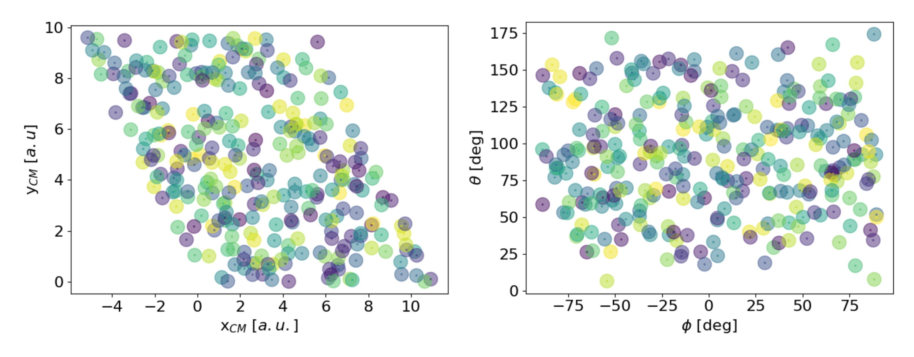

Reactive scattering from a metal surface
Our implementation allows us to simulate vibrational de-excitation probability during reactive scattering events at metal surfaces for any diatomic molecule with a suitable model to describe energies and forces (and friction coefficients for MDEF simulations). Here, we investigate the reactive scattering of hydrogen on a Ag(111) metal surface as a prototypical example.
To run this kind of simulation, a set of initial positions and velocities ($\mathbf{R}$ and $\mathbf{\dot{R}}$) with ro-vibrational quantum states $\nu$ and $j$ have to be generated (see EBK quantisation). With a specific ro-vibrational quantum state it is possible to compute different properties after molecular collision and energy transfer with the metal surface like the vibrational de-excitation probabilities discussed here.
In order to reproduce the state-to-state vibrational de-excitation probability results presented originally by [21] for this system, the same initial conditions were generated with QuantisedDiatomic.generate_configurations setting the initial ro-vibrational quantum state to ($\nu=2, j=0$) as was explored in the original paper.
As shown earlier in the EBK documentation we are able to generate a semiclassically quantised distribution for a diatomic molecule on a collision course with a metal surface. In this example we follow the EBK example using the H2AgModel to prepare our initial distribution and run our simulation.
Specifically, we have produced a set of initial conditions with different translational energy (translational_energy keyword) ranging from 0.2 to 1.4 eV, locating the hydrogen molecule 8 Å away from the metal surface (height keyword) with a normal incidence.
As usual, all quantities default to atomic units. Here we use Unitful to input the translational energy and height using different units, where they are later converted internally.
using NQCDynamics
using NNInterfaces
using Unitful
using NQCDynamics.InitialConditions: QuantisedDiatomic
using JLD2
atoms = Atoms([:H, :H])
model = H2AgModel()
cell = PeriodicCell([11.1175 -5.5588 0.0; 0.0 9.628 0.0; 0.0 0.0 70.3079])
sim = Simulation(atoms, model; cell=cell)
ν, J = 2, 0 # selected ro-vibrational quantum states
nsamples = 300 # number of configurations
Ek = 0.5u"eV" # Translational energy [eV] ; range considered [0.2-1.4] eV
z = 8.0u"Å" # Height [Å] ; fixed at 8 Å
configurations = QuantisedDiatomic.generate_configurations(sim, ν, J;
samples=nsamples, translational_energy=Ek, height=z)
v = first.(configurations)
r = last.(configurations)
distribution = DynamicalDistribution(v, r, (3,2))
nothing # hideGenerally it will be desirable to generate a distribution once and re-use it for multiple dynamics simulations. The simplest way to do this is to save the distribution using JLD2.jl. Refer to Saving and loading to learn more.
In order to produce an unweighted distribution, the lateral and angular orientation are randomly selected within the unit cell. As an example of the spacial and orientation distribution generated with this module, a subset of data (300 configurations) is shown below. To run our production simulations, however, a set of 80,000 initial velocities and positions were used.

Data analysis and truncation function
Since we are interested in the dynamics only when the molecule is close to the surface, we can use a callback to terminate the simulation early to save us some time. This requires defining a function that returns true when we want the simulation to terminate. This means we can set our time span relatively long since we expect most simulations to terminate before reaching the time limit.
using Statistics: mean
using LinearAlgebra: norm
h2distance(p) = norm(p[:,1] .- p[:,2])
"Terminates simulation if returns `true`."
function termination_condition(u, t, integrator)::Bool
R = get_positions(u)
zcom = au_to_ang(mean(R[3,:])) # Convert vertical centre of mass to angstrom
if zcom > 8.1 # Scattering event
return true
elseif au_to_ang(h2distance(R)) > 2.5 # Reactive event
return true
else
return false
end
end
terminate = DynamicsUtils.TerminatingCallback(termination_condition)
tspan = (0.0, 420.0u"fs")In this example, we consider the outcome a reactive event if the H-H bond length is larger than 2.5 Å in any point of during the trajectory and a scattering event if the molecule rebounds to a vertical distance from the metal surface greater than 8.1 Å.
MDEF with the LDFA
Now that we have set up the initial distribution and some of our simulation parameters, we can choose which form of friction we would like use. First, let's use the LDFA implementation provided by the CubeLDFAModel. This takes a .cube file containing the electron density and will provide the friction during the dynamics. Here we have given the new model our model from above, which will provide the forces.
using CubeLDFAModel
model = LDFAModel(model, "../assets/friction/test.cube", atoms, friction_atoms=[1,2], cell)Now we can pass all the variables defined so far to the Simulation and run multiple trajectories using run_dynamics.
sim = Simulation{MDEF}(atoms, model, cell=cell, temperature=300u"K")
ensemble = run_dynamics(sim, tspan, distribution;selection=1:20,
dt=0.1u"fs", output=OutputPosition, trajectories=20, callback=terminate)MDEF with neural network friction
Above, we used the LDFA interpretation of MDEF to perform the simulation. However, the H2AgModel actually provides it's own friction tensor trained on ab initio data. This can be used by simply using the model directly, without wrapping it with the LDFAModel.
model = H2AgModel()
sim = Simulation{MDEF}(atoms, model, cell=cell, temperature=300u"K")
ensemble = run_dynamics(sim, tspan, distribution;selection=1:20,
dt=0.1u"fs", output=OutputPosition, trajectories=20, callback=terminate)Visualisation
To show the effect of the truncation procedure, we have run 20 trajectories with and without the truncation function starting with an initial translation energy at 1.0 eV. For both figures, the total and kinetic energies are shown in the top panels along with the H-H distance and centre of mass z coordinate for each individual trajectory.